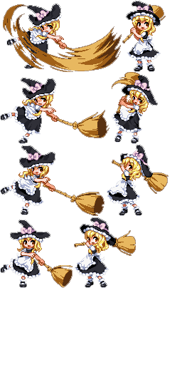

你想開發遊戲類的 Web App 嗎？在看完了《用 TogetherJS 與 CreateJS 開發多人遊戲 (上)》與《(中)》之後，你當然應該看完《(下)》以獲得最完整的概念。
接著稍微說明透過《Zoë》工具，直接輸出為 Sprite 或 JSON 檔案的方法。

上圖 sprite 範例，就是我以 Zoë 所產生並用在遊戲中的動畫。原始圖檔來自於《東方緋想天 (Scarlet Weather Rhapsody)》遊戲。你可到 http://www.spriters-resource.com 上找到。
用 TogetherJS 達到多人對戰功能
我第一輪撰寫遊戲的程式碼時，完全沒有想到多人對戰的功能。本來只想讓電腦操控的敵人隨機移動，寫個單人玩的躲子彈遊戲就好。結果我自己都撐不過 30 秒的無情「泡」火。所以我想如果支援多人對戰應該更好玩。
在 Together.js 發表後不久，我就略有耳聞。這個 jsFiddle 專案就是由 Together.js 提供相關功能，而且之間的關係密不可分，因此我也把 Together.js 加入遊戲。很感謝 Mozilla 提供了預設的訊息伺服器 (Hub Server)，大大簡化了可多人對戰的 Web 遊戲。可參閱本篇文章以進一步了解 Together.js。
我很輕鬆就把 Together.js 整合到遊戲之中，且運作起來就像是其他的事件 Dispatcher/Listeners 框架。
透過 Together.js，我也建構了隨機與受邀的多人對戰模式。而在設計通訊協定時，我確實遇上幾個設計難題。
首先，我假設雙方均有某程度的互信，所以沒加進防作弊程式碼。目前玩家的碰撞偵測都是在本端完成。所以理論上，如果你阻擋了反應訊息，你的角色就絲毫不會受傷。
另外我動了一點手腳，就是讓對手角色的泡泡都是在本端隨機產生。也就是說，你看到自己角色所產生的泡泡，其實和你對手看到的泡泡不完全一樣。
這些缺失都不致於影響遊戲的樂趣。不過我確實遇到 Together.JS 所造成的問題。
- 我沒辦法停用 Together.js 中的游標更新 (Cursor updating)。這功能對協作工具 (Collaborative tool) 很有用，但我的遊戲用不到。
- 我是以「非對稱 (Asymmetric)」的方式使用 Together.js，所以雙方看自己都是穿紅裙子的角色 (她叫 Reimu)。這樣也讓玩家能簡單分辨自己的角色在畫面底部，對戰玩家則是在畫面頂端。當你看自己的紅裙子角色移動時，對方在自己畫面中會看到白裙子角色在移動。
出錯的樂趣
遊戲中有兩項視覺效果達到出乎意料：
- 只要該回合結束，出現「You Win」或「You Lose」訊息時，整個畫面會暫停數秒鐘，看起來就是突然凍結一樣。
- 如果你想集氣攻擊對方，則蒐集而得的子彈會環繞在角色周圍，再朝敵人飛去。
其實這些效果本來不是我想要的。我沒有要暫停遊戲，而且本來想讓集氣子彈會在角色身旁轉動。但這兩個錯誤卻還是有不錯的效果，所以就這麼保留了。
結論和未來規劃
學學新東西別有趣味。我喜歡能快速撰寫程式原型並實際呈現。我接著會加入更多形式的泡泡和音效，也會試著畫出更多背景圖片甚至加入動畫效果。
在開發遊戲時，我發現如果要達到更成熟、更直覺的遊戲經驗，就必須下更多的功夫。這些也是我在玩其他遊戲時希望能享受到的東西。
這個遊戲同樣開放源碼，所以請大家盡情取用。如果對遊戲或程式碼有任何建議，請別忘了留言給我。
原文連結：Creating a Multiplayer Game with TogetherJS and CreateJS